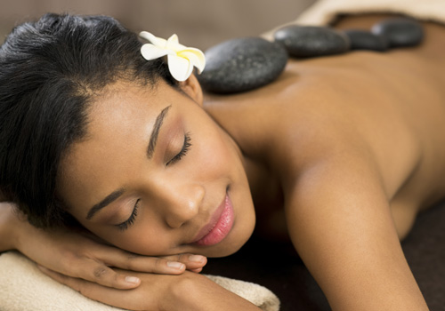
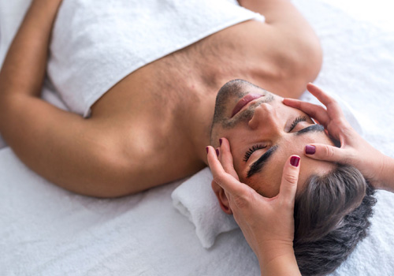
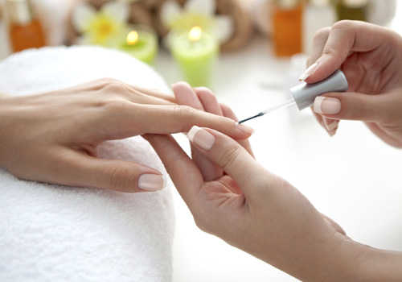

.jpg)
About
Experience the natural healing of Rooibos at Annique Beauty Salon & Day Spa. Nestled in the laid-back suburb of Clubview in Centurion, a five minute drive from Centurion Mall, you will find Annique Beauty Salon & Day Spa, where you can either pop in or stay for a full day of pampering. Annique Beauty Salon & Day Spa has been pampering clients for more than 25 years and will continue to provide excellent value for money.Annique Beauty Salon & Day Spa is housed in a beautiful old-world charming thatched building, surrounded by mature trees where birds chatter away. The decor is French colonial and makes one feel totally relaxed and at home. With a fireplace in the lounge, one can relax before or after a treatment and enjoy a fresh muffin, unique Annique Herbal Teas or Lifestyle Shake.
.jpg)
Produtcs
Massage
We offer a variety of Massage techniques that focus on relaxation, muscle tension and specific concerns. We also offer a range of post-Massage Treatment Products to assist with the healing process and continue the benefits of the massage treatments at home.
Male Grooming
Re-energize yourself or partner with our Male Spa Package in our comfortable Spa environment. We accommodate our Male guests with privacy and modesty. We also offer specialized skin care products for Men, which is a non-fuss range that focuses on general concerns.
Hands and Feet
We are Young Nails Acrylic and Bio Sculpture Gel Nail Systems Certified. We ensure quality and long lasting nails to our guests. We offer a range of Hand and Foot Treatments, whether you need a quick fix or a long luxurious pampering on your hands and feet.
Services
Spa Packages
We offer Spa Packages for Wedding Anniversaries, Birthdays, Bridal Parties, Mom-to-be’s as well as the traditional Half Day or Full Day Spas. We also offer a range of post-Massage Treatment Products to assist with the healing process and continue the benefits of the massage treatments at home.
Body Treatments
Rooibos, in conjunction with Lilian Terry professional body ranges, provide simple but effective result-driven treatments that can be added to any other Spa Services or experienced on their own.
Wax and Tint
We offer a quality Waxing system. Our qualified therapists are well skilled and trained in the Depiléve brand and are committed to ensuring your comfort and discretion at all times.
Facial Treatments
We specialize in sensitive and problematic skin treatments. Whether you are looking for a results-driven or relaxation Facial, we will customize your treatment to meet your skin’s specific needs.